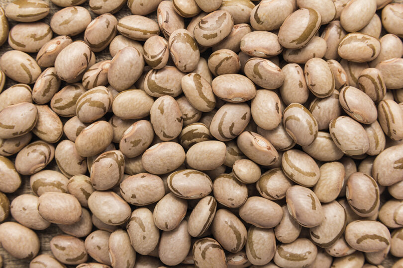

Milho

Este milho não é apenas um grão comum; é um ingrediente versátil que pode ser utilizado de diversas formas na culinária. Desde pratos tradicionais como pamonha, canjica e curau, até preparações mais modernas, o nosso milho adapta-se com facilidade às receitas da sua cozinha.
1155 réis por arroba
Feijão
O feijão é um dos pilares da nossa culinária. Além de ser a base de pratos tradicionais como feijoada e tutu, ele também se destaca em preparações mais simples, como o clássico arroz com feijão. Sua versatilidade na cozinha é uma verdadeira bênção, tornando-o um ingrediente indispensável na mesa de qualquer família.
1425 réis por arroba
Mandioca
A mandioca é uma verdadeira joia na nossa culinária. Além de ser a base de pratos como a farofa e a tapioca, ela também se presta a diversas receitas, desde petiscos até acompanhamentos. Sua versatilidade na cozinha a torna um tesouro que enriquece nossa mesa diariamente.
210 réis por arroba
Trigo
O trigo é a base de muitas de nossas receitas. Desde o pão que perfuma nossas cozinhas até os bolos e massas que encantam nossas mesas, o nosso trigo é um ingrediente essencial que transforma simples ingredientes em pratos memoráveis.
550 réis por saca de trigo